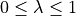

Optimal Classification Trees#
Classification trees are among the most popular and inherently interpretable machine learning models and are used routinely in applications ranging from revenue management and medicine to bioinformatics. In these settings, it is crucial to leverage the full potential of available data to obtain the best possible, i.e., optimal, classification tree. We say that a classification tree is optimal if there exists a mathematical proof that no other tree yields a lower misclassification rate in the population used for training the method. StrongTree is a Mixed-Integer Optimization (MIO) based formulation for learning optimal classification trees of a given depth. StrongTree significantly improves upon traditional heuristic approaches in terms of performance, is much faster than other MIO-based alternatives, and can handle real-valued covariates, unlike existing MIO-based methods. See the corresponding paper for a complete treatment of StrongTree (Aghaei et al., 2021).
Choosing an Objective to Optimize#
StrongTreeClassifier provides two options for the objective function through the obj_mode parameter, "acc" and "balance". When obj_mode="acc" the classifier will attempt to maximize the classification accuracy and whenobj_mode="acc" it will maximize the balanced accuracy, which averages the accuracy across classes.
The balanced accuracy can be helpful in the case of imbalanced datasets. A dataset is imbalanced when the class distribution is not uniform, i.e., when the number of data points in each class varies significantly between classes. For an imbalanced dataset, predicting the majority class results in high accuracy. Thus decision trees that maximize prediction accuracy without accounting for the imbalanced nature of the data perform poorly on the minority class. Imbalanced datasets occur in many important domains, e.g., in a problem such as suicide prevention, there are a very small number of suicide instances.
Optimality#
The StrongTreeClassifier provides an argument, time_limit for limiting the amount of time the solver will spend finding the optimal decision tree. The default time limit is 60 seconds and once the specified solving time has elapsed, StrongTreeClassifier will return the resulting decision tree and report the optimality gap, which is an indicator of the quality of the solution. The optimality gap is an indicator of the quality of the solution, i.e., how far our solution is from the optimal solution (in the case of optimality, the gap is zero). For larger problems it may be necessary to increase the time limit to allow the classifier to find a high-quality solution.
Speeding up Computation: Benders’ Decomposition#
ODTlearn offers a novel Benders’ decomposition-based algorithm for solving the problem of learning optimal classification trees. This algorithm is the default algorithm for StrongTreeClassifier. However, one may not want to use the decomposition algorithm when developing new MIO formulations based upon StrongTreeClassifier. We provide the option to directly solve the MIO formulation using Gurobi by specifying benders_oct= False. For the majority of use-cases we recommend the Benders’ decomposition-based algorithm because it is significantly faster than the direct approach.
Regularization#
To avoid overfitting on the training data, a regularization term () can be specified in StrongTreeClassifier. This regularization term penalizes the number of branching nodes in the decision tree. A higher value of  results in a sparser decision tree, i.e., a decision tree where the distance of its leaf nodes from the root node is not the same. Figure 2 shows an example of an imbalanced decision tree. You can set the value of via parameter
results in a sparser decision tree, i.e., a decision tree where the distance of its leaf nodes from the root node is not the same. Figure 2 shows an example of an imbalanced decision tree. You can set the value of via parameter _lambda in StrongTreeClassifier.

Handling Integer Features#
StrongTree requires all the input features to be binary, i.e., all the elements of the feature matrix  should be either 0 or 1. However, this formulation can also be applied to datasets involving categorical or integer features by first preprocessing the data. For each categorical feature, one needs to encode it as a one-hot vector, i.e., for each level of the feature, one needs to create a new binary column with a value of one if and only if the original column has the corresponding level. One can use a similar approach for encoding integer features with a slight change. The new binary column should have a value of one if and only if the main column has the corresponding value or any value smaller than it.
should be either 0 or 1. However, this formulation can also be applied to datasets involving categorical or integer features by first preprocessing the data. For each categorical feature, one needs to encode it as a one-hot vector, i.e., for each level of the feature, one needs to create a new binary column with a value of one if and only if the original column has the corresponding level. One can use a similar approach for encoding integer features with a slight change. The new binary column should have a value of one if and only if the main column has the corresponding value or any value smaller than it.
ODTlearn provides a function called binarize for taking care of the binarization step. When provided a data frame with only categorical/integer columns, the function outputs a binarized data frame.
References#
Aghaei, S., Gómez, A., & Vayanos, P. (2021). Strong optimal classification trees. arXiv preprint arXiv:2103.15965. https://arxiv.org/abs/2103.15965